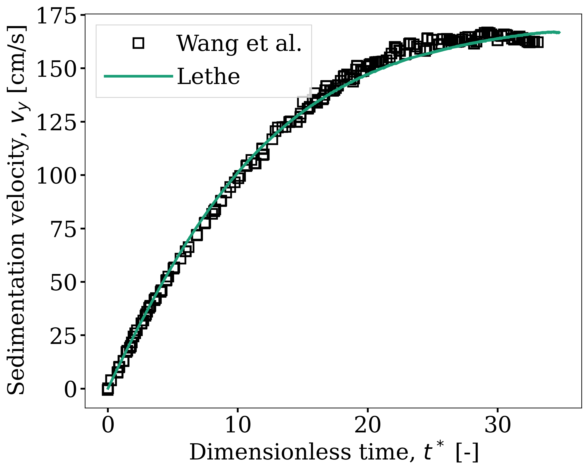

Sedimentation of One Cuboid Particle#
This example aims to simulate the S18 experiment of Wang et al. [1]. This experience measures the velocity of the sedimentation of a \(2\,\text{cm}\) cuboid particle in a container filled with a glycerin-water solution.
Note
This example is similar to the sedimentation of one particle example (Sedimentation of One Particle) but with a cuboid particle instead of a sphere. As such, the physical setup changes, but the parameters relating to the numerical resolution remain very similar.
Features#
Solvers:
lethe-fluid-sharp(with Q1-Q1)Transient problem
Displays the capability of the resolved CFD-DEM solver for the flow around one non-spherical particle
Files Used in This Example#
Parameter file:
/examples/sharp-immersed-boundary/sedimentation-1-cuboid/sedimentation-1-cuboid.prm
Description of the Case#
The S18 experiment consists of the release of a cuboid particle made of stainless steel (\(\rho_p=0.00759 \frac{\text{kg}}{\text{cm}^{3}}\)) with sides of 2.0 cm dropped into a water column of dimensions \(40 \times 80 \times 40\,\text{cm}\). In their experiment, the authors use a glycerin-water solution with varying concentrations to get different settling regimes. The relevant properties to the S18 case, as reported by the authors, are the fluid kinematic viscosity \(\nu_f=1.07 \frac{\text{kg}}{\text{s cm}}\) and the fluid density \(\rho_f=0.00124 \frac{\text{kg}}{\text{cm}^{3}}\) leading to a particle Reynolds number of \(Re_p \approx 300\). The gravity constant is \(g= -981 \frac{\text{cm}}{\text{s}^{2}}\). The particle accelerates due to gravity until it hits the bottom of the container, at which point we stop the simulation.
Note
You will note that we have transformed every length unit into centimeters. The reason is that the particle’s size is very close to \(1\,\text{cm}\). Representing the problem in this way improves the condition number of the linear system. It avoids extremely small values in the matrix due to the volume of cells being expressed in \(\text{cm}^{3}\) instead of \(\text{m}^{3}\).
All the container walls have no-slip boundary conditions except at the top of the container, where we define an open boundary.
Parameter File#
In each section of the parameter file, we describe relevant parameters to the simulation. As stated before, most of the parameters are similar to the ones used in the sedimentation of one particle example. We will only describe the parameters that are different from the previous example.
Simulation Control#
subsection simulation control
set method = bdf2
set bdf startup method = multiple step bdf
set time step = 0.0005
set time end = 0.6
set output path = out/
end
The
time stepis set to0.0005. This is very small for this case but it ensures that the particle is properly accelerated from rest at the beginning of the simulation. In order to reduce the computational time, one could use an adaptive time step/time scaling to increase the time step once the particle has sufficiently accelerated.The
time endis set to0.6. This is approximately the sedimentation time of the particles as recorded in the article by Wang et al. [1].
Physical Properties#
subsection physical properties
subsection fluid 0
set kinematic viscosity = 1.07
set density = 0.00124
end
end
These values are obtained from the article by Wang et al. [1] and further communications with the authors.
Mesh#
subsection mesh
set type = dealii
set grid type = subdivided_hyper_rectangle
set grid arguments = 1,2,1: 0,0,0 : 40,80,40 : true
set initial refinement = 5
end
The domain is a rectangular box and as such we can directly use a subdivided hyper rectangle mesh from the deal.II library. In this case, we have orientated the y-direction with gravity. As such, we have the long side of the box along this axis.
The
grid argumentsare set to1,2,1: 0,0,0 : 40,80,40 : true. This section has 3 subsections. Firstly,1,2,1describes the initial subdivision of the box. This subdivision has been chosen as it is the smallest mesh we can do of the box in order to have cubic elements. Secondly,0,0,0 : 40, 80, 40describes the 2 points from which we have derived the rectangular box (0,0,0) and (40,80,40). Finally, we havetrue, which is a boolean to activate the coloration of the boundary. This allows us to define separate boundary conditions at each side of the box.The
initial refinementis set to 5. This will ensure to have a base mesh that is a bit finer than the particle.
Mesh Adaptation#
subsection mesh adaptation
set fraction coarsening = 0.3
set fraction refinement = 0.05
set max number elements = 750000
set max refinement level = 8
set min refinement level = 4
set type = kelly
set variable = velocity
end
The
fraction coarseningis set to0.3.The results are shown in the animation below. This limits the accumulation of elements when the particle is moving. It allows for cells far from the particle to be coarsened when the particles get further away.The
fraction refinementis set to0.05. The objective here is to refine elements that become close to the particle when it’s moving. This will mostly refine elements around the particle that are not already included in the refinement zone around the particle.The
max refinement levelis set to8. This parameter limits how small the elements around the particle can get limiting the total number of elements in the problem. Here we limit the mesh size to ~ \(10\) elements per sides of the cuboid. An initial mesh sensitivity study showed this resulted in close to mesh independent results sufficient for demonstration purposes, although a more refined mesh would be required for a rigorous studyThe
typeis set tokelly. Since the particle is moving and we do not want a uniform refinement of all the cells, we use the kelly error estimator based on thevelocityvariable.
Boundary Conditions#
subsection boundary conditions
set number = 6
subsection bc 0
set type = noslip
end
subsection bc 1
set type = noslip
end
subsection bc 2
set type = noslip
end
subsection bc 3
set type = outlet
end
subsection bc 4
set type = noslip
end
subsection bc 5
set type = noslip
end
end
Here we define the \(5\) no slip boundary for all the box walls and specify the boundary with id=3 to an outlet representing the top of the box. We refer the reader to the Boundary Conditions - CFD section on how those boundaries are defined.
Note
The boundary id of deal.II rectangular mesh are numbered as such: \(x_{min}=0\), \(x_{max}=1\), \(y_{min}=2\), \(y_{max}=3\), \(z_{min}=4\), \(z_{max}=5\), as described by the GridGenerator documentation.
IB Particles#
subsection particles
subsection extrapolation function
set length ratio = 2
set stencil order = 3
end
subsection local mesh refinement
set initial refinement = 4
set refine mesh inside radius factor = 0.8
set refine mesh outside radius factor = 1.5
end
subsection DEM
set particle nonlinear tolerance = 1e-2
set enable lubrication force = false
set explicit contact impulsion = true
set explicit position integration = true
set contact search radius factor = 1.2
subsection gravity
set Function expression = 0;-981;0
end
end
subsection particle info 0
set type = superquadric
set shape arguments = 1.;1.;1.;5;5;5
set integrate motion = true
subsection position
set Function expression = 20;70;20
end
subsection velocity
set Function expression = 0;0;0
end
subsection physical properties
set density = 0.00759
set volume = 8
set inertia = 0.04048;0;0;0;0.04048;0;0;0;0.04048
set restitution coefficient = 0.2
set youngs modulus = 1000000
end
end
end
A few important new parameters have been added in this example to accelerate the simulation compared to the single-sphere sedimentation example. Notably, the following have been set differently explicit contact impulsion = true, explicit position integration = true, and enable lubrication force = false.
The explicit contact impulsion accelerates the nonlinear resolution of the flow in iterations where the particle contacts the bottom of the container. This simply evaluates the contact impulsion at the first Newton iteration and assumes that it remains constant (a generally good approximation).
The explicit position integration is also used to accelerate the nonlinear resolution of the coupled CFD-DEM system, and to speed up each iteration. However, this one affects all iterations. It means that the particle position is defined based on the velocity of the previous time step and the fluid force of the previous time step (using the results of the first dem iteration). This significantly accelerates the iteration as it avoids having to do the full DEM calculation at each iteration and the associated cut cell mapping. However, this can affect the stability of the scheme as the velocity is still evaluated implicitly.
Warning
explicit position integrationshould not be used for a case where that particle density is close to the fluid density, as is the case for the sphere sedimentation case. Here, its use is justified since the particle is significantly denser than the fluid, meaning the explicit evaluation of the particle dynamics is much more stable.
The enable lubrication force is set to false as the subgrid model use to calculate the lubrication force is only valid in the case of spheres. This means that the fluid force applied on the particle when it get very close to the bottom of the container is not well approximated, only refining the mesh can improve the modelisation of this phase of this sedimentation case.
Since our particle is a cuboid, we will have to define a few more parameters than for a sphere.
typeis set tosuperquadric. In the experimental setup, the cuboid particle has a beveled edge, for which the dimentions are not properly reported in the paper of reference. In order to represent this cuboid shape, we make use of a superquadric. The rounded edges will therefore give a rough approximation of the beveled geometry and help reduce difficulties of modelling with sharp edges. The shape arguments are set to1.;1.;1.;5;5;5. The first three parameters are the half-lengths of the cuboid in the x, y and z directions. The last three parameters are the exponents of the superquadric shape; the higher the exponent, the sharper the edge.positionFunction expression is set to20;70;20. This is the initial position corresponds to the center of the drop tower.velocityFunction expression is set to0;0;0. This is the initial velocity of the particle since it starts at rest.densityis set to0.00759. This is the density of the particle as reported in the article by Wang et al. [1].volumeis set to8. This is the volume of the cuboid particle \(2\,\text{cm} \times 2\,\text{cm} \times 2\,\text{cm} = 8\,\text{cm}^3\).inertiais set to0.04048;0;0;0;0.04048;0;0;0;0.04048. This is the inertia of the cuboid particle. The inertia of a cuboid particle is given by the following formula:\[I_{ij} = \frac{1}{6} m a^2\]where \(m\) is the mass of the particle, and \(a\) is the side length of the cube.
Running the Simulation#
Call lethe-fluid-sharp by invoking the following command:
to run the simulation using sixteen CPU cores.
Warning
Make sure to compile Lethe in Release mode and run in parallel using mpirun. This simulation takes \(\sim \, 4\) hours on \(16\) processes.
The post-processing script post-process-sedimentation-1-cuboid.py can be used to compare the results obtained with the ones proposed by Wang et al. [1]. The script can be run using the following command:
Results#
In this section, we will briefly show some results of this simulation.
First, we can look at a slice of the velocity profile during the simulation. The results are shown on the left of the animation below. The animation shows two other initial orientations, corresponding to the S17 and S16 cases of Wang et al. [1]. We observe that the starting orientation has an impact on the particle’s trajectory and velocity profile.
We can also compare the results obtained for the velocity in time with the results proposed by the article of Wang et al. [1], which are stored in the S18.dat file. They chose to represent the velocity as a function of a dimentionless settling time \(t^*\), defined as:
where \(a\) is the length of the cuboid particle, \(g\) is the gravity constant, \(\rho_p\) is the density of the particle, and \(\rho_f\) is the density of the fluid. Using this definition for time, we recover results which are in excellent agreement with the experiments of Wang et al. [1].
Note that, as reported in the article, the figure represents the absolute value of the sedimentation velocity.
Warning
The exact volume and bevel geometry of the cube used in the original work by Wang et al. are not described. For this reason, we simplified the shape to a regular cuboid and assumed the volume and moment of inertia of a cube in the above. This simplification may be a source of discrepancy between their measurements and our simulations.